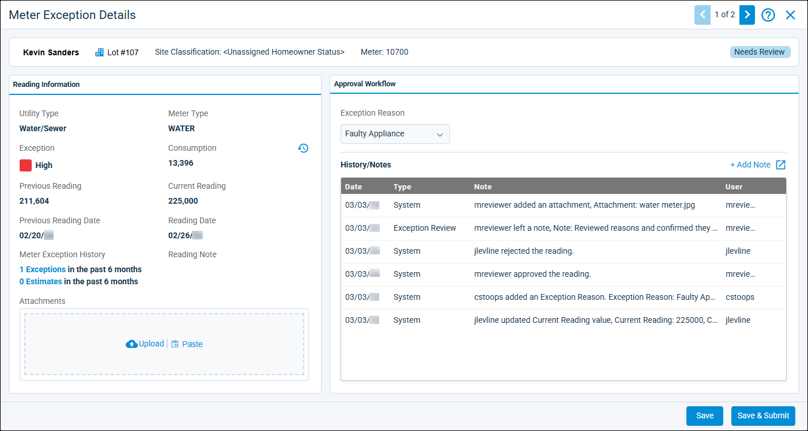
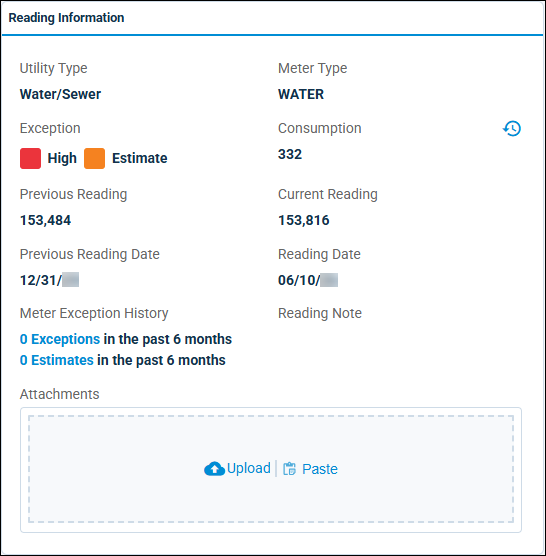
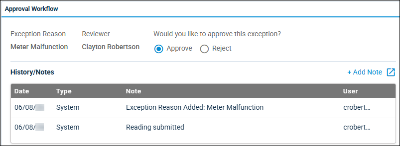

Source: https://rmxhelp.rentmanager.com/Topics/Express/CSH/MU-Meter-Exception-Details.htm
Meter Exception Details (Pop-Up)
The Meter Exception Details pop-up allows you to view meter exception information and optionally update details about the exception, such as adding images, an exception reason, and history/note items. This pop-up is accessible only if, on the High/Low Settings pop-up's Approval Workflows tab, Enable Approval Workflow is unchecked or you are assigned as a meter exceptions reviewer or approver.
Related Privileges
| Group | Privilege | Column |
|---|---|---|
| Utilities | Metered utilities | Enabled |
| Manage High/Low Settings | View |
For more information, refer to Control User Access.
To view the details of a meter exception, go to  arrow_forward Services arrow_forward Metered Utilities arrow_forward Meter Readings and select the desired Property, Utility, and a single Billing Period. Then, in the bottom right of the page, click Review Meter Exceptions and, on the meter you wish to view, click
arrow_forward Services arrow_forward Metered Utilities arrow_forward Meter Readings and select the desired Property, Utility, and a single Billing Period. Then, in the bottom right of the page, click Review Meter Exceptions and, on the meter you wish to view, click  arrow_forward Details.
arrow_forward Details.

The scoreboard at the top of the pop-up displays the tenant, unit, site classification, and meter number associated with the meter exception.
Reading Information
This tile displays general information for the meter exception. To open the View Consumption History pop-up for the unit associated with the meter exception, click .

| Field | Description |
|---|---|
|
Attachments |
To attach any images associated with the meter reading (such as a photo of the meter at the time of the reading), click |
|
Consumption |
The utility usage in the unit of measurement of the meter. The result is calculated using the following formula: Consumption = Current Reading – Previous Reading |
|
Current Reading |
The utility usage as of the most recent meter reading. |
|
Exception |
The name of the consumption group based on the defined consumption range and the meter's Consumption amount. If the meter exception reading type is an estimate, Estimate displays. |
|
Meter Exception History |
The number of exceptions in the last six months. To view the Meter Exception History pop-up, which displays details for each exception, click on the number of exceptions. |
|
Meter Type |
The name of the meter type that is used to determine the utility charge amount based upon consumption. For more information, refer to Meter Types (Page). |
|
Previous Reading |
The total amount of the selected utility consumed at the unit when meter readings were last posted. This amount is in the unit of measurement for the utility's meter type. |
|
Previous Reading Date |
The date on which the last meter reading was recorded. |
|
Reading Date |
The date on which the most recent meter reading took place. |
|
Reading Note |
An optional comment providing further information about the reading, as entered on the Meter Readings page's Note field. |
|
Utility Type |
The name of the utility type associated with the meter reading as established on the High/Low Settings pop-ups' Exception Reasons tab. |
Approval Workflow/Exception Review
This tile allows you to review and/or add an exception reason and history/note items for the meter exception review currently in progress. If, on the High/Low Settings pop-up, the Property and Utility Type associated with the meter reading exception is assigned to an Approval Workflow, the tile is named Approval Workflow. Otherwise, the tile is named Exception Review.

If the meter exception needs review, the Exception Reason drop-down field populates with the reasons (e.g., Water Leak, Recent Move In/Out, Faulty Appliance) established on High/Low Settings pop-ups' Exception Reasons tab.
If the meter exception has been submitted for approval, the Reviewer and the Would you like to approve this exception? fields display, prompting the approver to either approve or reject the meter exception. You must be an approver for an enabled approval workflow to approve or reject the meter exception. For more information, refer to Meter Exceptions Approval Workflow.
The History/Notes section displays only history/note items linked to the meter exception review currently in progress. Rent Manager automatically creates some exception reason history/note items at the system level, such as notes that record when a meter reading was submitted, an attachment was added or removed from a reading, or a reading was approved or rejected.
The following columns display in this section.
| Column | Description |
|---|---|
|
Date |
The date the note was created or last edited. |
|
Note |
Any information about the history/note item describing the event, interaction, or message. |
|
Type |
The custom or system-generated history/note type (e.g., Call, Exception Review, Note, System). |
To record an exception history/note item, click  Add Note. To open the History/Notes pop-up, which allows you review and edit all history/note items linked to the meter exception review currently in progress, click
Add Note. To open the History/Notes pop-up, which allows you review and edit all history/note items linked to the meter exception review currently in progress, click  .
.